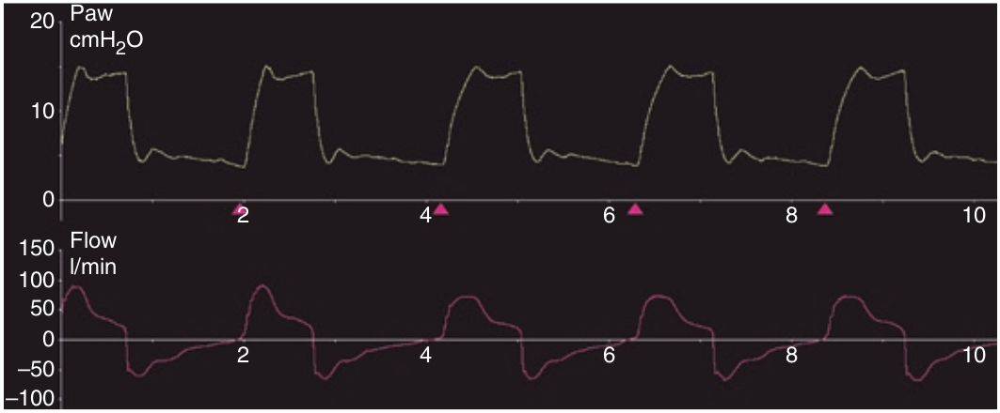

در صورت وجود نشت تصادفی، الگوی شدت جریان افت اهسته تری نسبت به حالت عادی پیدا میکند. در صورتی که میزان نشت بیشتر از آستانه سایکل باشد، شدت جریان در پایان دم حالت با ثباتی پیدا میکند. این میزان شدت جریان به ثبات رسیده معادل مقدار شدت جریانی است که نشت پیدا میکند. نتیجه این می شود که مدت هواگیری ریه افزایش می یابد و سایکل دچار تاخیر می گردد که خیلی برای بیمار ناراحت کننده است. تحت این شرایط وجود یک مکانیسم سایکل زمانی پشتیبان مفید است تا فاز دم حمایت فشاری را خاتمه دهد.

وجود نشت در فاز هواگیری ریه ها:
۱ - زمان دم را کوتاه میکند
۲ - سبب افت سریع تر شدت جریان می گردد
۳ - سایکل را به تاخیر می اندازد
۴ - هماهنگی بیمار-ونتیلاتور را بهتر می کند
۵ - ممکن است بصورت افت سریع شدت جریان در انتهای دم تظاهر کند